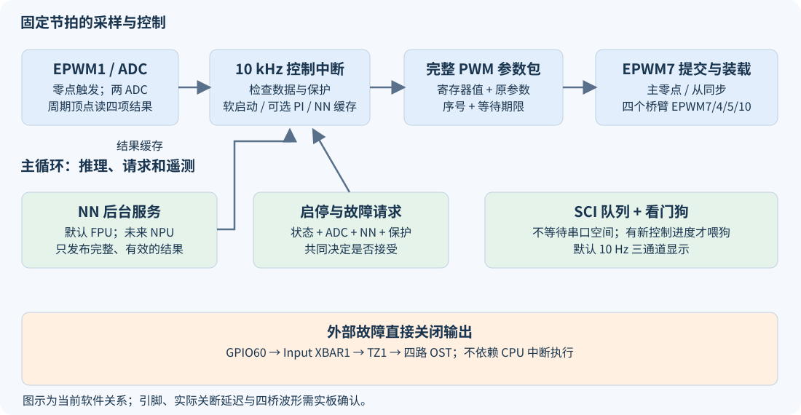
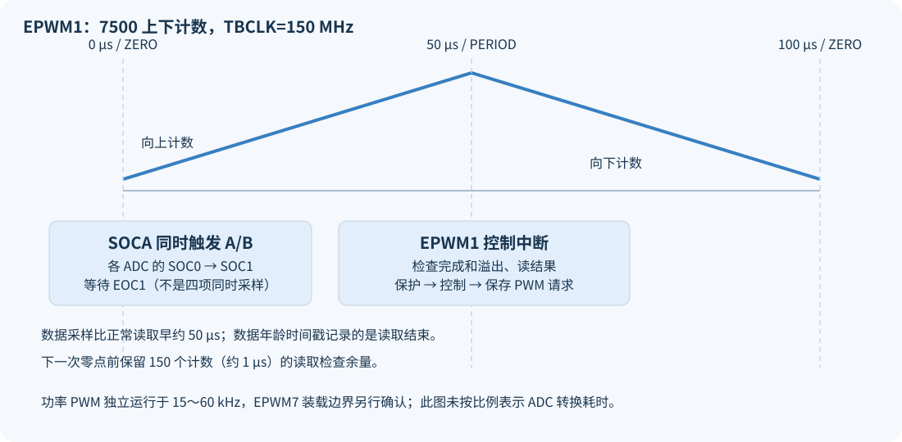
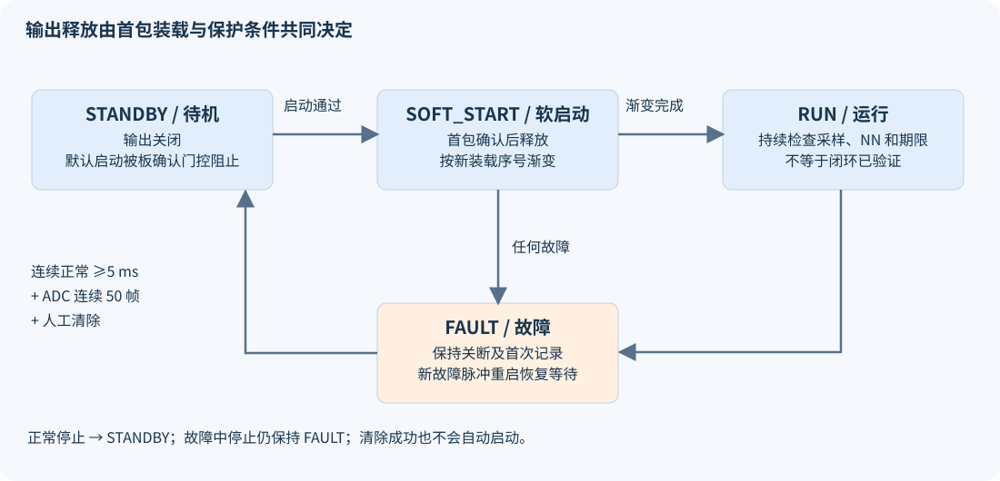

F28P550 DAB 控制项目上手与配置说明
版本：2026-10-08，已按 LAUNCHXL-F28P55X 更新。适用项目：dab_control_f28p550，对应本次软件修正后的代码。
2026-10-08 补充关键功能的中文行尾和代码段注释，涵盖 17 个源码/头文件；控制逻辑、配置参数和模型权重保持一致。编辑器及电脑测试明确使用 UTF-8，避免中文乱码；注释前后代码一致性记录与本次重新构建及测试结果单独保存；该记录对应补注释当时版本。随后按已确认的 LaunchPad 型号修正了工程配置和故障 LED 极性，随后将 PWM 集中到 J8、ADC 集中到 J7，辅助信号在 J6；当前结果见第 14 节。
当前可运行的软件基准是 FPU 神经网络版本，真实 DAB NPU 模型尚未接入。 默认禁止功率输出、禁止自动启动、使用 NN 开环模式；编译和电脑上的逻辑验证已完成，开发板上的波形、保护动作、传感器精度和闭环稳定性尚未验证。
本文把“代码现在做什么”“为什么这样配置”“改动应该在哪里”“还需要什么实验”放在一起。新手建议按第 1、3、4、6、7、8、11 节阅读，再使用第 12 节操作 CCS；准备接入功率板时逐项填写第 15 节的验收表。
1. 五个项目分别用于什么
| 目录 | 角色 | 应重点学习的内容 | 与当前 DAB 的关系 |
|---|---|---|---|
ex_led_ch1 |
F28P550 入门例程 | 时钟、GPIO、LED、工程构建 | 验证基础环境；不是功率控制代码 |
ex_dma_adc_2.3.1_ch2 |
F28P550 ADC/DMA 参考例程 | ADC 触发、转换结果、DMA 搬运 | 参考配置方法，不能直接套用其通道与采样时刻 |
ml_arc_detection_F28P55x_ch7 |
F28P55x NPU 电弧识别参考例程 | TI NPU 初始化、模型接口、完成通知、存储安排 | 参考运行接口；电弧模型的输入、输出和模型库不能当作 DAB 模型 |
DAB_20250829_Ver4 |
F28335 原始 DAB 程序 | 原控制含义、手写 NN 权重、相移算法、旧采样系数 | 功能迁移的数值基准；其寄存器配置不能用于新芯片 |
dab_control_f28p550 |
当前目标程序 | ADC、四路 ePWM、控制状态、NN、保护、SCI | 本文说明和本次修改的对象 |
原程序最后把 PI 修正量 F_duty 覆盖成零，因此新程序默认保留 NN 开环行为。新程序提供可选择的闭环分支，但保留该分支不等于已完成闭环调试。
2. 认识芯片和常用名称
F28P550 属于 TI C2000 实时控制 MCU。本项目将 C28x CPU 配置为 150 MHz，使用 FPU 进行浮点计算；芯片的 CLA 是可承担控制计算的协处理器，NPU 是用于神经网络运算的硬件，两者目前均没有承担本项目的实际控制计算。
| 名称 | 初学者可以如何理解 | 本项目的使用情况 |
|---|---|---|
| ADC | 把引脚电压变成数字 | ADCA/ADCB 读取四个量；不是“双 CPU” |
| SOC / EOC | 一次采样转换的启动 / 转换结束 | 每个 ADC 使用 SOC0、SOC1，EOC1 表示这两次转换结束 |
| ePWM | 按定时计数生成开关信号 | EPWM7/4/5/10 控制四桥臂，EPWM1 提供采样和控制节拍 |
| TBPRD / TBCTR / TBPHS | 计数上限 / 当前计数 / 同步时载入的相位值 | 决定频率、更新时机和桥间相移 |
| Shadow / Global Load | 先保存新参数，等指定事件再生效 | 减少四个桥臂出现不同版本参数的风险 |
| Trip Zone / OST | 外设直接关闭输出 / 关闭状态锁存 | 外部故障和软件故障都保持 PWM 为低 |
| CMPSS / PPB | 连续模拟比较器 / ADC 结果附加处理 | 尚未配置；是下一阶段保护改进方向 |
| SCI | MCU 串行通信外设 | SCIA 向 VOFA+ 发送三通道数据 |
| PIE / ISR | 中断分配机构 / 事件发生时执行的函数 | EPWM7 和 EPWM1 都在 PIE group 3，当前不嵌套 |
| Driverlib | TI 封装外设寄存器操作的库 | 应用使用这些 API，而不是直接照搬 F28335 寄存器 |
| CPUTimer2 | 连续运行的硬件计数器 | 统一用于数据年龄、超时、遥测和故障时间记录 |
这里的 C28x char 是 16 位，sizeof(float) 为两个可寻址字，而线路上的一个字节仍是 8 位。通信不能把 PC 上的“逐 char 复制 float”代码直接搬过来；当前明确拆出四个 8 位数据发送。TI C28x 字节访问说明
开发板已确认为 TI LAUNCHXL-F28P55X，MCU 完整型号为 TMS320F28P550SJ9PZ，100 引脚 PZ 封装。 四个 CCS 构建配置已统一为 SJ9 和 _LAUNCHXL_F28P55X，默认连接为板载 XDS110；device.h 也固定使用 LaunchPad 配置，避免旧生成文件漏掉宏时选错 LED 引脚。SJ9 的资源可按 TI 数据手册查询；当前 FPU 程序无需扩大已验证的内存安排，真实 NPU 模型接入时再按模型要求分配。板卡身份不能确定外接 DAB 功率板的接线、标定和芯片实际 revision。
3. 从数据到开关信号：总览

一条控制链包含：外设触发采样 → 读取完整结果并换算 → 检查保护 → 读取已完成的 NN 结果 → 按软启动和可选 PI 计算参数 → 保存完整 PWM 参数 → EPWM7 中断写入 → 零点和同步事件使参数生效。
主循环负责启停请求、NN 推理、串口发送和看门狗服务。控制中断不等待 NPU 完成，也不等待串口发送完毕；两类任务通过完整结果和状态交换信息。
| 执行位置 | 函数 | 主要工作 | 默认节拍 |
|---|---|---|---|
| 初始化 | main、各模块 _init |
时钟、保护、ADC、NN、控制、PWM、SCI | 复位后一次 |
| EPWM1 中断 | dab_control_ISR |
ADC 读取、NN 超时检查、保护和控制计算 | 10 kHz，即 100 μs 一次 |
| EPWM7 中断 | dab_pwm_commit_ISR |
硬件故障检查、参数提交、装载进度记录、首次释放 | 通常 15～60 kHz，启动释放时临时切到零点 |
| 主循环 | DAB_NN_service |
FPU 或未来的 NPU 推理，发布缓存结果 | 输入变化达到 0.1 V 时 |
| 主循环 | DAB_Telemetry_service |
每次最多放入 16 个线路字节 | 每次循环尝试，FIFO 满则立即返回 |
| 主循环 | serviceWatchdog |
有新控制中断进度才喂狗 | 每次循环检查 |
| 主循环 | DAB_Telemetry_sendVOFA |
三个 float 编成整帧放入队列 | 10 Hz，即 100 ms 一次 |
EPWM1 固定 10 kHz，功率 PWM 可变为 15～60 kHz，因此两个计数器的相位关系会变化。当前采样未固定在功率 PWM 的安静位置，这一项仍需要板上观察开关噪声后改进。
4. 代码在哪里：推荐阅读路线
文件均位于 dab_control_f28p550，表中的相对位置用于说明目录关系。
| 文件 | 阅读时要回答的问题 | 关键入口 |
|---|---|---|
dab_main.c |
程序如何开始，哪些工作在后台？ | main、看门狗服务 |
dab_types.h |
各状态、数据和基本常量是什么？ | Dab_State_e、Dab_Sensing_t、Dab_PwmParams_t |
dab_board_config.h |
哪些引脚和配置必须按自己的板修改？ | 板确认开关、通道、系数、模式、软件期限 |
device/device.h、device/device.c |
时钟、开发板 LED/SCI、Flash 运行代码如何配置？ | Device_init、DEVICE_SETCLOCK_CFG |
dab_adc.c/.h |
从何处采样，什么时候读，如何拒绝旧数据？ | DAB_ADC_init/read/isReady |
dab_control.c/.h |
什么时候允许启动，如何算 PI 和软启动？ | DAB_Control_start/step/stop/faultReason |
dab_pwm.c/.h |
四桥如何同步更新，何时真正允许输出？ | DAB_PWM_init/updateModulation、两个 ISR |
dab_protect.c/.h |
哪些故障真的会关闭输出，如何恢复？ | DAB_Protect_checkFault/clearFault |
dab_nn.c/.h |
输入与输出含义，推理在哪里，NPU 如何切换？ | DAB_NN_service/getOutput/checkDeadline |
dab_math.h |
数字异常、输出边界和 PI 如何处理？ | DAB_isFinite、DAB_nnOutputValid、DAB_piStep |
dab_telemetry.c/.h |
三个通道是什么，串口忙时怎么办？ | 编码、有限队列、FIFO 服务 |
28p55x_generic_*_lnk.cmd |
程序、变量和 NPU 工作区放在哪里？ | .TI.ramfunc、.rodata.tvm、.bss.noinit.tvm |
.cproject、.ccsproject、targetConfigs/ |
构建参数和调试连接是否匹配？ | 构建配置、实际器件、调试器 |
model/ |
目前有哪些模型产物？ | FLOAT ONNX、清单、验证向量 |
CPU1_RAM/syscfg/ 是生成目录，Board_init() 在当前 main 中没有调用；应用自己配置引脚。只在 SysConfig 界面修改 GPIO 并不会自动改变当前运行配置，手工修改生成的 board.c 也容易在下一次生成时丢失。
5. 当前默认配置速查
这些数值来自当前代码和时钟计算，均不是实板测量结果。
| 项目 | 当前配置 | 含义与修改位置 |
|---|---|---|
| 时钟来源 | LaunchPad 板载 20 MHz XTAL，经 PLL 得到 150 MHz | device/device.h；板上测试仍需测实际时钟 |
| LSPCLK | SYSCLK / 4 = 37.5 MHz | SCI 时钟 |
| ePWM TBCLK | 150 MHz，无额外分频 | 一个计数约 6.667 ns |
| 功率 PWM 基准 | DAB_BASE_TBPRD=2500 |
上下计数，30 kHz |
| 功率 PWM 范围 | TBPRD 1250～5000 | 60～15 kHz，由 NN 的 T 和软启动决定 |
| 控制节拍 | DAB_CTRL_TBPRD=7500 |
10 kHz，DAB_CTRL_FREQ_HZ 是对应说明常量 |
| 死区 | RED/FED 各 50 个计数 | 约 333 ns；未按本板驱动器测量调整 |
| ADC 时钟 | SYSCLK / 2 = 75 MHz | 当前使用整数分频 |
| ADC 参考 | 内部 3.3 V，12 位转换 | 内部参考初始化等待 5 ms |
| 采样窗口 | ADC_setupSOC(...,15U) |
15 个 SYSCLK，约 100 ns；不是 15 个 ADCCLK |
| 平均长度 | 电压 50 点，电感电流 10 点 | dab_adc.c；IOUT 只计算瞬时值 |
| 板确认 | DAB_BOARD_CONFIG_CONFIRMED=0 |
默认启动拒绝码 1，保持关闭输出 |
| 自动启动 | DAB_AUTO_START=0 |
使用明确的人工启动请求 |
| 控制模式 | DAB_CONTROL_MODE=0 |
NN 开环；设为 1 才使用 PI 修正 |
| NPU | 未定义 DAB_USE_HARDWARE_NPU |
FPU 模型可直接编译，硬件 NPU 依赖尚缺 |
| Vin | 固定 DAB_NOMINAL_VIN=90.0f |
不代表已经测量实际输入电压 |
| PI | kp=0.00005、ki=0.0001、ref=40 | DAB_Control_init；开环下修正量为零 |
| 看门狗 | DAB_ENABLE_WATCHDOG=1 |
名义约 0.839 s 未喂狗则复位 |
| 遥测 | SCIA、115200、8N1，10 Hz | 分频取最近整数后实际约 114329 baud |
| 软件检查 | 当前界限 | 作用与限制 |
|---|---|---|
| ADC 读边界 | 下降计数且 TBCTR≥150 | 距下一次采样约 1 μs；不是读函数耗时上限 |
| PWM 写边界 | 开始要求下降计数且 TBCTR>1050；中途要求 TBCTR>600 | 开始时额外预留约 3 μs 写入预算，保留原 4 μs 边界；仍需测最坏耗时 |
| ADC 新鲜度 | 最近有效读取不超过 150 μs | 时间戳是读取结束，采样本身通常更早约 50 μs |
| PWM 更新期限 | 等待提交或装载不超过 300 μs | 不能通过覆盖新请求延长旧请求等待 |
| NPU 运算期限 | 1000 μs | 晚到的完成通知同样判超时；不自动复用缓冲区 |
| 故障恢复条件 | 持续正常至少 5000 μs | 同时要求连续 50 帧有效采样，且人工清除 |
| SCI 帧服务期限 | 20000 μs | 超时清发送 FIFO 并丢弃软件队列，控制不等待 |
这些软件期限用于发现停滞，不能作为已验证的过流关断时间。特别是发生全局中断停滞时，150/300 μs 检查也无法执行，外部 Trip Zone 和独立看门狗承担不同的故障处理职责。
5.1 LAUNCHXL-F28P55X 已确认的板级配置
依据 TI 开发板用户手册 SPRUJC0A和 TI 官方原理图 SPRR499A，板卡身份、封装、板载时钟和接口已可确定。排针编号下表沿用 TI 原理图的 BoosterPack 总编号；本地针号指各个十针排针自身的第几针，不要与 MCU 封装脚号混淆。
| 当前代码用途 | MCU 信号 | 排针总编号 | 排针本地针号 | MCU 100PZ 脚号 |
|---|---|---|---|---|
| 第一桥臂 A / B | EPWM7A/B，GPIO12 / GPIO13 | J8 / 80、79 | 10、9 | 51、50 |
| 第二桥臂 A / B | EPWM4A/B，GPIO6 / GPIO7 | J8 / 78、77 | 8、7 | 97、84 |
| 第三桥臂 A / B | EPWM5A/B，GPIO37 / GPIO35 | J8 / 76、75 | 6、5 | 61、63 |
| 第四桥臂 A / B | EPWM10A/B，GPIO62 / GPIO63 | J8 / 74、73 | 4、3 | 46、47 |
| IO 输出电流采样 | ADCB B0 | J7 / 63 | 3 | 41 |
| IL 电感电流采样 | ADCB B1 | J7 / 64 | 4 | 40 |
| VN 电压采样 | ADCA A5 | J7 / 65 | 5 | 35 |
| VP 电压采样 | ADCA A4 | J7 / 66 | 6 | 36 |
| 外部故障输入 | GPIO60 → INPUTXBAR1 / TZ1，低有效 | J6 / 55 | 5 | 44 |
| 测时输出 | GPIO61 | J6 / 54 | 4 | 91 |
| 数字信号地 | GND | J6 / 60 | 10 | — |
| 模拟信号地 | GND | J7 / 62 | 2 | — |
| 心跳 / 故障指示 | LED4 GPIO20 / LED5 GPIO21 | 板载 LED | 低电平点亮 | 48、49 |
| USB 遥测 | SCIA GPIO28 RX / GPIO29 TX | XDS110 虚拟串口 | S2 左右0/0、J101 UART跳帽连通 | 1、100 |
当前分配：八路 PWM 集中在 J8 本地第3～10针，四路 ADC 集中在 J7 第3～6针，两个辅助数字信号在 J6 第4～5针。 全部位于 BoosterPack Site2；数字线束与模拟线束分组连接，外接功率板重新接线必须以这张表为准。J7 第1针是 5 V 电源，不是 ADC 输入。
GPIO4/5 不再输出 PWM，因此 S4 不再是本程序 PWM 的前置条件。初始化停用旧 EPWM2/3/6，将未再使用的旧输出脚设为无内部上拉的输入，并复位本次使用的五个 ePWM 后重新配置，避免 RAM 重载保留旧触发或装载设置；GPIO6/7 现在是第二桥臂，不能按旧第四桥臂线序连接。现有程序没有 CAN 控制功能，若以后加入 CAN，应另行配置 GPIO4/5 和 S4。
四桥臂移相算法含义保持不变，实际外设映射改成 EPWM7/4/5/10；EPWM7 为主计数器和共同同步源，其他三个直接同步并连接其 GLDCTL2。独立的 10 kHz 采样与控制改用 EPWM1，零点 SOCA 触发 ADCA/ADCB、周期顶点的 INT_EPWM1 执行控制；INT_EPWM7 提交功率参数。这些配置必须一并修改，不能只改 GPIO，也不能按连续编号遍历。
两个中断仍不嵌套，且都属于 PIE Group3；同时待处理时，编号1的控制中断优先于编号7的 PWM 提交中断。这与旧版优先顺序不同，B09 必须重新测入口等待和最坏提交时间；固定10 kHz、50 μs采样等待、30 kHz基准功率PWM及死区数值保持不变，不代表实际最坏延迟已经上板验收。
100PZ 封装的 A4/B8 为 MCU 第36脚，A5 为独立的第35脚；A5 与第21脚的 PGA2_INM 不共脚，不能套用其他封装的 A5/PGA 图。新 A4/A5/B0/B1 都不经 S6、不连接 PGA 输出，也不占用 A0/DACA_OUT 或 A1/CMP1_DACL。输入串联电阻默认为 0 Ω，可选 RC 电容未装，100 ns 采样窗仍需按外接前端阻抗验收。
初始化显式将 GPIO12/13、LED20/21 及 SCIA RX 的 GPIO28 设为数字模式，将 A4/A5 对应的 AIO225/249 和 B0/B1 对应的 GPIO253/230 设为模拟模式；仅选择复用功能不保证模拟/数字通路已接通。资料中的一处 B0/AGPIO231 标注与100PZ引脚图不一致，本项目依据实际 MCU 第41脚及 Driverlib 使用 GPIO253，详见本次引脚核查记录。
GPIO35/37 同时是 TDI/TDO，因此保留默认两线 cJTAG，R44/R45 保持未安装，不能改成同时占用这两脚的四线 JTAG。板载 XDS110 的 USB 和虚拟串口不受本次 PWM 分配影响；RevA 的 R111/R112 装配问题位于调试侧，不能误写成 R44/R45 默认已安装或 J8 一定与调试冲突。
S3 左右均置1（GPIO24/GPIO32=1/1）用于 Flash 独立启动；RAM 程序仍依赖调试器加载。S2 的 UART 路由要求左右0/0、J101 对应跳帽连通。板载晶体占用 GPIO18/19，不能再把这两脚作普通扩展输出。
默认 USB 供电时 JP1 的 5 V 和地跳帽连通，JP2 接通 5 V/3.3 V；外接功率板前按实际供电方案核对跳帽与接地。板上有隔离调试器不等于默认 USB 供电方式已将功率系统与电脑隔离；JP4 为1.2 V监测点，不能作外部供电入口。
DAB_BOARD_CONFIG_CONFIRMED=0 继续表示外接 DAB 功率板尚未验收。新分配不改变标定系数、控制频率、死区或默认启动条件；没有外接传感器时 ADC 数值可能浮动，不能当作实际电压或电流。
6. ADC：从采样到可信数据
6.1 通道、触发和读取时刻
| ADC / SOC | 默认通道 | 变量 | 用途 |
|---|---|---|---|
| ADCA / SOC0 | ADCINA4 | vout_p_raw |
原边相关电压，当前不进入电压 PI |
| ADCA / SOC1 | ADCINA5 | vout_n_raw |
副边输出电压，保护及 PI 使用 |
| ADCB / SOC0 | ADCINB0 | iout_raw |
输出电流观测，尚无独立 IOUT 保护逻辑 |
| ADCB / SOC1 | ADCINB1 | il_raw |
电感电流，±25 A 软件越限检查 |
以上是逻辑通道，封装焊盘、连接器和实际传感器接线必须查本板原理图。vout_p、vout_n 延续旧程序命名，不能仅凭字母推断采样点的电气极性。

EPWM1 上下计数：零点 SOCA 同时触发 A/B 两个 ADC；每个 ADC 内部按优先级先 SOC0 再 SOC1，并非四通道同时锁存。到 50 μs 后的周期顶点产生 EPWM1 中断，读取 A/B 的 EOC1 状态和四个结果；ADCINT1 只作为完成状态使用，没有启用对应 ADC 的 PIE 中断。
读取前后均检查完成、溢出和计数边界，清标志时再检查溢出竞争。若任何一步不完整，就拒绝该帧；这样可以发现读取跨过下一次采样边界，但仍不是各通道采样时刻的精确时间戳。TI ADC 时序说明
6.2 原始计数如何换算
当前沿用原程序的参考系数：
VP = 0.0615 × rawVP − 0.6465
VN = 0.0303 × rawVN + 0.2903
IL = 0.0168 × rawIL − 37.314
IO = 0.0168 × rawIO − 37.314
Vin = 90.0（固定值，没有 Vin SOC）
这四个系数没有针对 F28P550 采样板重新标定。 改电流系数在 dab_board_config.h，改电压系数在 dab_types.h；必须同时检查采样量程、零点、保护门限和模型输入单位。
例如 rawIL≈2221 时，当前代码算出电流接近 0 A；这个例子只是解释数字转换，不说明实板零电流一定等于 2221。vin_raw 字段存在但未采样，vin_ave=90 也不构成输入电压保护。
6.3 为什么改成原始数值求和
电压保存最近 50 个原始 ADC 值，电感电流保存最近 10 个值，用 32 位整数维护总和，然后只对平均结果做比例和偏置换算。电压总和最大 50×4095=204750，不会溢出 32 位整数，也避免长期浮点加减累积偏差；瞬时值仍保留，保护不依赖慢平均。
正常帧每 100 μs 一次，50 点平均的延迟约 (50−1)×100 μs/2=2.45 ms，−3 dB 频率约 88.6 Hz；10 点平均延迟约 0.45 ms。50 点适合平滑显示，但会限制快电压控制，下一阶段应把“控制用滤波”和“显示用滤波”分开，当前不在缺少功率级响应数据时直接缩短窗口。
6.4 有效、就绪和恢复有什么区别
- 一帧有效：本次读取完整且未越过检查边界，
g_adcFrameCount增加。 - 采样就绪：最新帧有效、连续 50 帧有效、最近一次读取年龄≤150 μs，
DAB_ADC_isReady()才为真。 - 丢帧或超过期限：
g_adcInvalidFrameCount增加，平均历史和连续计数重新开始；显示保留最后一次值，但该值不能用于批准启动。
复位后至少要完成约 5 ms 的有效采样才能就绪；中间任何无效帧都会重新计数。恢复要求比“累计已经采过 50 次”严格，防止一次好数据掩盖最近的采样异常。
当前已启用 ADCINT 连续模式及配套清标志处理；若芯片 revision=0，同时给未使用的 C/D/E 转换器上电。这些处理对应 TI 勘误，不是增加三个实际采样通道。SPRZ572B ADC 条目
6.5 后续采样优化怎么判断
100 ns 只说明 MCU 采样保持窗口，是否足够取决于传感器输出、串联电阻、运放、RC 和模拟引脚。用同一稳定输入比较多个窗口长度，观察误差和前一通道对后一通道的影响，再按 TI ADC 输入电路分析方法 使用本芯片参数计算；不应把旧器件的输入电容直接代入。
先测量采样在开关周期中的位置和噪声，再决定是否把 SOC 移到功率 PWM 的安静位置、改成 EOC 触发控制、使用 PPB 延迟记录或 DMA。当前只读四个值，DMA/CLA 是否值得引入要依据实际时间占用，而不能只依据芯片具备这些功能。
7. PWM：四个桥臂、移相和同步生效
7.1 默认引脚和计数方式
| 外设 | 输出引脚 | 代码中的角色 |
|---|---|---|
| EPWM7A/B | GPIO12 / GPIO13 | 主计数器及第一桥臂 |
| EPWM4A/B | GPIO6 / GPIO7 | 第二桥臂，内部相移 D1 |
| EPWM5A/B | GPIO37 / GPIO35 | 第三桥臂，相对主桥的 D0 |
| EPWM10A/B | GPIO62 / GPIO63 | 第四桥臂，内部相移 D2，并带 D0 |
| EPWM1 | 不配置功率输出引脚 | 采样和控制节拍 |
| GPIO61 | 普通输出 | 控制中断执行期间拉高，用于测时 |
逻辑第一/第二桥臂对应原边，第三/第四桥臂对应副边；算法含义保持不变，实际外设为 EPWM7/4 和 EPWM5/10；这仍需实际驱动接线确认。每个 A 输出经 Dead Band 形成互补 B 输出；故障时 A/B 都被 Trip Zone 设为低，实际驱动器是否以低电平表示关断也必须确认。
上下计数时 fsw=150 MHz/(2×TBPRD)；增大 T_gain 会增大周期、降低频率。变周期会同时改变相位对应的时间，不能把 D0 的变化独立当作唯一功率控制量。
7.2 D1、D0、D2、T 具体如何进入寄存器
设 P=tbprd_var。当前 A 动作是“下降计数达到 CMPA 时置高，上升计数达到 CMPB 时置低”：
| 外设 | CMPA | CMPB | 同步时相位 | 同步后方向 |
|---|---|---|---|---|
| EPWM7 | P | 0 | 主外设不载入相位 | 自由计数 |
| EPWM4 | D1×P | (1−D1)×P | 0 | 向上 |
| EPWM5 | P | 0 | D0×P | 向下 |
| EPWM10 | D2×P | (1−D2)×P | D0×P | 向下 |
D1/D2 是桥内相移参数，不是通常意义上的单管占空比。 一对比较值的和约等于 P，因此理想单桥臂 A 的高电平仍约占完整周期的一半；桥内两腿错开的时间决定桥输出的三电平区间，死区和取整会使实际波形略有差异。
名义上 D0×P 对完整 2P 周期对应 180×D0 度计数偏移。实际原副边电压的领先/滞后、同步传播延迟和第一次脉冲还受到同步后计数方向、驱动极性与延迟影响，必须从波形确认，不能仅用这个换算判断功率方向。
7.3 为什么不直接在控制中断写寄存器
控制计算在固定 10 kHz，开关周期却会变化，直接写寄存器容易让四桥在不同时间用上新值。当前保存一整份参数包，包括整数寄存器值、原参数和序号；EPWM7 到周期顶点后，在距离零点足够远的下降计数区域写入。开始写入必须同时保留 DAB_PWM_STAGE_BUDGET_COUNTS=450 和原边界 600，共 1050 计数；进入过晚时不写寄存器，保留请求等后续机会，中途仍以 600 为边界复核，300 μs 总等待期限不变。450 是基于一次约 302 计数实测增加余量的初值，全周期范围和最坏负载仍需验证。
TBPRD/CMPA/CMPB 使用 Shadow 和单次 Global Load：主外设零点载入，从外设在主同步事件载入，GLDCTL2 与主外设关联。TBPHS 没有相同的 Shadow 机制，所以写相位前临时禁止从外设相位载入，全部写完后恢复，再最后设置单次装载请求；边界检查失败会关闭输出或等待下一次机会，等待仍受 300 μs 总期限限制。
当前两个生产/消费中断都在 PIE group 3，默认不嵌套，这也是完整参数交换的条件。以后若引入嵌套、CLA 或另一个 CPU/任务写入 PWM，必须重新设计所有权和交接，不能继续假定当前条件成立。TI Global Load 参考例程
7.4 如何知道装载进度，如何安全启动
TI 手册说明 GLDCTL2 的 OSHTLD 写 1 才置位，读回总为零，所以不能轮询它判断“已经完成”。当前预留 EPWM7 SOCB 的零点标志作为事件记录，清标志后才发起装载；后续看到零点时更新 g_pwmAppliedSequence 和 g_pwmAppliedParams。TI TRM：ePWM、GLDCTL2 寄存器
Applied 表示软件观察到配置的装载边界，不是回读四个外设的活动寄存器，更不是证明四桥的实际输出完全同步。第一次启动仍保持 OST，准备并等待首个完整参数跨过装载事件，再检查 ADC、NN 和保护，才清软件关断；停止取消软件等待并重新强制 OST。
写零不能取消已经发出的硬件单次装载；停止后旧请求仍可能在输出被关断时载入。因此停止后的 g_pwmAppliedParams 应理解为最后一次被软件确认的参数，不是被取消过程中所有内部寄存器的实时镜像。
7.5 PWM 仍需要哪些板上证据
必须同时观察四个桥臂或等效桥电压，覆盖启动、停止、频率和相位边界、快速参数变化、故障后恢复。重点确认无短促异常脉冲、无直通、两桥更新属于同一版本，并测量实际死区；软件里的 4 μs 写入检查和默认 333 ns 死区均不能代替这些证据。
8. 控制：DAB 原理、模式和状态
8.1 DAB 为什么使用相移
DAB 两侧都是全桥，经变压器和等效串联电感连接；两侧桥电压的差决定电感电流变化，可以概念性写成 diL/dt=(vpri−n×vsec)/L，其中 n 和 L 必须按具体电路定义。桥间相移决定平均能量传递，桥内相移及频率又影响电流应力、环流和开关条件。
本程序同时调整 D1、D0、D2 和周期，属于多参数调制。缺少变比、电感、训练目标和电路定义时，不能用标准单相移功率公式直接证明这四个 NN 输出正确；TI TIDA-010054 DAB 资料可用于学习相移和控制调试方法，不能直接复制其 100 kHz 功率级参数。
8.2 开环与闭环
| 模式 | 当前计算 | 使用条件 |
|---|---|---|
DAB_MODE_NN_OPEN_LOOP=0 |
NN 给出目标调制，PI 修正固定为 0 | 默认模式，保留旧程序最终行为 |
DAB_MODE_NN_CLOSED_LOOP=1 |
用输出电压误差算 PI，再修正三种相移 | 需要标定电压和验证对象响应、反馈符号及 PI 参数 |
开环下 ref=40 仍参与软启动误差显示，但不会保证输出稳定在 40 V。RUN 只表示软件达到运行状态，不表示实板电压、功率或效率符合要求。
8.3 当前 PI 如何计算
target = clamp(ref,0,60) × ramp
error = clamp(target − vout_n_ave,−40,+40)
integral_candidate = integral + ki × error
out = clamp(kp × error + adjusted_integral,0,0.15)
积分具有输出边界限制和恢复方向处理，保存的积分范围为 ±0.15；开环下积分、输出均为零。ki 是每次调用的系数，当前每秒 10000 次，改变控制频率时不能保持 ki 不变并期待相同动态。
PI 输出只允许非负，当前没有经过反向功率控制设计。若要双向 DAB，必须重新定义电压/电流反馈、功率方向、相移范围和故障门限，不能只允许 out 为负数。
8.4 NN 输出如何转成软启动调制
令 ramp=s_softCnt/1000，NN 输出为 [D1n,D0n,D2n,Tn]，PI 修正为 u：
D1 = (1−ramp) + ramp × clamp(D1n/Tn − u,0.001,0.999)
D2 = (1−ramp) + ramp × clamp(D2n/Tn − u,0.001,0.999)
D0 = ramp × clamp(D0n/Tn + u,0,0.999)
T_gain = 1 + ramp × (Tn−1)
P = truncate(T_gain × 2500)
因此启动起点为 D1=D2=1、D0=0、T=1，逐渐过渡到目标；并非“PWM 单管占空比从零增加”。计数只在已允许输出且观察到新装载序号时增加，正常节拍下约 100 ms，实际可能稍长；没有实际更新时不会仅靠控制调用次数进入 RUN，持续停滞会触发超时关闭。
运行中的参考值、输入变化尚没有按功率级确定的变化速度限制。适当限制每次相移/周期变化能减少电流突变，但界限需要电感、变比和实验数据，已经列入后续验收。
8.5 状态和命令

| 数值 / 状态 | 含义 | 允许的下一步 |
|---|---|---|
| 0 / INIT | 启动前初值 | 初始化进入 STANDBY |
| 1 / STANDBY | 待机，保持输出关断 | 通过全部条件后启动 |
| 2 / SOFT_START | 首包准备、释放和参数渐变 | 完成软启动到 RUN，或停机/故障 |
| 3 / RUN | 正常控制计算 | 人工停止或故障 |
| 4 / FAULT | 锁存故障，输出关断 | 满足恢复条件并人工清除后回 STANDBY |
启动拒绝码 g_startRejectReason：0=接受，1=板配置未确认，2=状态不是 STANDBY，3=ADC 未就绪/过旧，4=NN 未就绪或异常，5=保护未允许，6=NN 测试中，7=NPU 候选模型未批准功率控制。请求被读取后即消耗，不会因为以后条件满足而自动执行旧请求。
9. NN 与 NPU：现在做到哪里
9.1 FLOAT 基准网络
网络为 3→29→12→6→4：前三层 ReLU，最后线性输出，582 个权重/偏置。当前 FPU 版本保留原模型参数，循环实现代替旧程序大量手写表达式，相关函数从 RAM 执行。
input[0] = −0.5
input[1] = Vin / 140
input[2] = 0.285714
output = [D1,D0,D2,T]
两个常量输入代表什么物理量、训练域是什么，现有代码和文件不足以确认。当前 Vin 固定为 90 V，主循环通常只计算一次并使用缓存；真实测量 Vin 接入后，变化达到 ±0.1 V 才更新，不能据此说 NPU 每 100 μs 运行一次。
9.2 输出检查和超时
四个输出必须有限，T 必须在 0.5～2，三种相位值必须在 −0.005×T 到 1.005×T。保留少量负数容差，是因为旧 FLOAT 基准在对照向量上出现小负 D2；后续映射仍作边界限制，超过容差的异常值直接故障。
这个检查只保证接口数值合理，不证明模型适用于当前电路，也不定义训练安全范围。量化后必须再次验证误差映射到 PWM 计数、实际相移和电流的影响，不能以单个误差数字代替输出边界验证。
NPU 运行采用一组长期存在的输入、输出和描述对象，一次只允许一项运算。主循环检查完成，控制中断也检查 1 ms 超时；超时锁定故障，即使随后完成也不接受，更不会启动下一次运算覆盖仍可能被 NPU 使用的缓冲区。
9.3 model 目录各文件是什么
| 文件 | 当前内容 | 能否直接用于硬件 NPU |
|---|---|---|
dab_float_baseline.onnx |
FLOAT32、输入 [1,3]、输出 [1,4]，原权重基准 |
还不能；需要 TI 支持的模型编译过程 |
dab_model_manifest.json |
模型结构、单位、文件摘要和既有对照结果 | 用于追踪版本 |
validation_vectors_NOT_calibration.csv |
Vin 20～140，步长 1，共 121 个回归向量 | 不是代表性校准数据，也不是训练范围声明 |
generated/npu/tvmgen_default.h |
TI NNC 2.1.0 真实生成，输入 16 项 FLOAT32 | 已接入专用配置，待实板核对 |
generated/npu/mod.a |
DAB16 模型库，四层矩阵运算使用 NPU | 已编译链接；仅核对/计时，禁止功率启动 |
当前 FPU 与原表达式在电脑上对照的最大绝对误差为 3.91155481×10⁻⁷；ONNX 清单记录此前独立 ONNX 对照结果，不应把两种验证误差混为一项。都未证明真实 NPU 的数值或运行速度。
9.4 已接入真实 NPU，功率控制仍待精度验收
CPU1_LAUNCHXL_NPU_FLASH 已加入真实 DAB 模型库、16 项输入适配、GS1 工作区和最终完成计时。仅 features[1]=Vin/25-4.6，其余为零；输出仍为 [D1,D0,D2,T]。旧三输入接口的 DAB_NPU_FLOAT_IO_CONFIRMED 不适用于这个模型。
TI NNC 对原候选 MatMul 图会回退到 CPU，现已等价改写为四层 1×1 Conv；501 点转换前后输出一致，生成代码与最终链接确认四个 NPU 阶段。原 FLOAT 基准与 INT8 候选仍有最大约 0.049 的输出误差，92.2～92.5 V 部分点还不满足已有输出范围检查，因此该配置强制禁止功率启动（拒绝码 7），不能只改板确认宏绕过。
开发板操作、六组期望输出、完成时间含义、重建命令和剩余验收见 NPU 接入说明。实际硬件输出和耗时尚待开发板核对；电脑接口替身只验证调用与保护逻辑。
10. 保护、恢复和看门狗
10.1 哪些保护现在真的有效
| 路径 | 当前行为 | 限制 |
|---|---|---|
| 外部故障 | GPIO60 低 → Input XBAR1 → TZ1 → 四路 OST，A/B 低 | 依赖真实故障源、接线及驱动关断电平 |
| 输出过压 | 瞬时 vout_n≥80 → 软件故障 |
采样及标定正确才有效，反应受 10 kHz 和读取延迟影响 |
| 电感过流 | 瞬时 il≥25 或 il≤−25 → 软件故障 |
不是连续硬件比较器，可能错过采样间尖峰 |
| 采样、NN、PWM 异常 | 不可信、超期或越界 → 关闭并记录 | 检查代码需要 CPU 能继续执行 |
| 看门狗 | 前台或控制中断无进展时复位 | 名义约 0.839 s，不承担快速短路保护 |
Dab_ProtectFlags_t 中还定义了温度、输入过压/欠压、输出短路等名字，名字存在不代表检测已经完成。Vin 固定模式下不启用真实 Vin 欠压保护，DAB_HAS_VIN_SENSING=1 会明确要求补写通道和标定；当前未配置 CMPSS，H_OCP 的来源是外部故障输入，不是已经实现的片内过流比较器。
10.2 首次故障为什么要保存
g_firstFault 保存首次原因、故障前状态、Timer2 计数、ADC 帧数、最后装载序号、IL/VOUT 原始值。随后出现的故障和普通停止不会覆盖它；只有复位初始化或接受人工清除才重置，便于发现最先导致停机的原因。
| reason | 名称 | 含义 |
|---|---|---|
| 0 | NONE | 没有记录 |
| 1 | LIMIT | 现有软件门限等保护请求 |
| 2 | HARDWARE | 外部故障引脚或其来源锁存 |
| 3 | ADC | 采样不完整、过旧或控制节拍失去进展 |
| 4 | NN | NN 结果或内部控制数值异常、NPU 超时 |
| 5 | PWM_TIMEOUT | 提交或装载等待超过期限 |
| 6 | PWM_WINDOW | 写入过程越过允许窗口 |
| 7 | MODULATION | 计算的调制参数未通过合法性检查 |
tick 是向下计数的时钟值，不是毫秒或日期；持续 150 MHz 时无符号差值除以 150 得到 μs。Timer2 约 28.63 s 回绕，当前短期限用无符号减法处理回绕，但不能用于跨越多个回绕的绝对时间统计。
10.3 清除故障必须满足什么
输出已经关闭；ADC 连续 50 帧正常且足够新；瞬时电压/电流正常；GPIO60 为高；正常状态持续至少 5 ms；NN 无锁定异常；最后执行人工清除请求。满足后只回到 STANDBY，仍需要新的人工启动。
为检测恢复期间的新短故障脉冲，FAULT 中允许在输出关闭时清除外部来源锁存，重新监测下一次事件；软件 OST、Stop_Flag 和首次故障一直保留。这样的新脉冲会重新开始恢复计时，不能通过一次正常采样就重新启动。
当前恢复采用同一电压/电流门限，没有依据本板噪声设置单独迟滞门限。需在门限附近试验抖动，再确定触发和恢复阈值；持续正常时间与人工确认已经加入，但不能替代迟滞设计。
10.4 看门狗和时钟故障
控制中断增加 g_controlHeartbeat；只有主循环观察到它变化才喂狗。主循环卡死、控制中断停止、持续关闭中断均不能靠单独一处循环保持喂狗；正常执行的 FAULT 状态仍可喂狗，方便保留诊断。
名义计算为 256×512×64/10 MHz≈0.839 s，时钟来源 INTOSC1，实际偏差需要测量。调试长时间暂停时也要考虑复位和 Timer2 自由运行；仅在无功率输出的调试构建中可设 DAB_ENABLE_WATCHDOG=0，正式上板版本应恢复并验证。
PLL 使用下已按勘误关闭 MCD，但尚未完成持续 DCC/NMI 时钟故障监督。初始化的频率核查不是运行期间一直检查，不能宣称晶振丢失已经安全处理；需要结合实际时钟及故障试验完成。TI 时钟勘误
11. 通信：VOFA+、队列和控制命令
SCIA 使用 GPIO28 接收、GPIO29 发送，对应 LaunchPad 板载 XDS110 虚拟串口，采用 8 数据位、无校验、1 停止位；连接 USB 后在电脑选择对应 COM 口。SCI_setConfig 初始化后调用 SCI_setBaud，按最近整数取分频：37.5 MHz 时 BRR=40，实际约 114329 baud，相对 115200 约 −0.756%；原仅初始化取 BRR=39 的偏差约 +1.725%。
| VOFA+ 通道 | 发送变量 | 含义 |
|---|---|---|
| 1 | g_pwmParams.F_duty |
PI 修正，开环为 0；不是 PWM 引脚实际占空比 |
| 2 | g_piCtrl.err |
有限幅的电压误差，软启动时参考也随 ramp 变化 |
| 3 | g_sensing.vout_n_ave |
50 点平均后的输出电压 |
每帧三项 float，各四个低字节优先的线路字节，再加 00 00 80 7F 尾标，共 16 个 8 位字节。尾标按 VOFA+ JustFloat 约定固定发送，不要把它当作 MCU 故障码；当前帧不携带 CRC、时间戳或状态，只用于显示。
10 Hz 每帧 16×10 个串口位，名义 115200 下线路传输约 1.389 ms；按当前实际分频约 1.399 ms，占线约 1.4%，并不是 CPU 在这段时间一直忙等。
发送队列最多四帧，满时丢弃新整帧并增加 g_telemetryDroppedFrames；服务每次最多发送 16 字节，FIFO 满时立即返回。活动帧超过 20 ms 则清 Tx FIFO、丢弃剩余队列并增加 g_telemetryTimeoutCount；已经传到线路的部分内容无法撤回，显示端需靠后续尾标恢复对齐。
当前没有 SCI 接收命令协议。 g_startRequested、g_stopRequested、g_clearFaultRequested 是 CCS 观察窗口的请求变量，VOFA+ 串口并不能直接完成启动、停止或改参考；若以后需要远程控制，必须定义命令、长度、校验、回应、超时和权限条件，并让状态规则继续生效。
12. CCS 快速操作：先掌握软件，再接功率板
12.1 建立可重复的编译环境
当前本机验证使用 TI CGT C2000 22.6.2.LTS 和 C2000Ware_DigitalPower_SDK_5_05_01_00 内的 C2000Ware。工程起源信息包含 C2000Ware 6.00 路径，但实际包含路径和链接库指向 E 盘安装，不能仅按工程名称判断使用哪个 SDK。
- 在 CCS 导入
dab_control_f28p550根目录，检查包含路径、编译器版本和链接库路径；换机器时应同时检查.cproject和两个链接文件的安装路径，不直接编辑生成 makefile。 - 使用默认
targetConfigs/TMS320F28P550SJ9_LaunchPad.ccxml和板载 XDS110；四个配置均已选择 TMS320F28P550SJ9。记录实板 revision，按第 5.1 节核对新排针接线。 - 选择
CPU1_RAM做初期调试，保持板确认=0、自动启动=0、NPU 关闭，先 Build；RAM 程序依赖调试器载入，不能当作断电后自动运行程序。 - 需要 Flash 运行时选择
CPU1_FLASH；CPU1_LAUNCHXL_RAM/FLASH也可使用，四个配置均已包含_LAUNCHXL_F28P55X。Flash 配置使用 O2 和 Release Driverlib，RAM 保留未优化的调试配置。 - 所有外设/保护/模型与板验收完成后才将
DAB_BOARD_CONFIG_CONFIRMED设为 1；这个宏是人工确认结果，不会自动识别板或校验接线。
本次验证未进行连接、烧写或功率实验。操作示例用于指导后续上板，不能把“工程编译成功”当作允许直接接入额定电压的依据。
NN 前向计算已加入 Timer2 分段计时及待机有限次数重复测试。g_nnTiming.fpuForward 保存 FPU 前向最短/平均/最长时间，npuSubmit 与 npuObserved 区分 NPU 提交和发现完成，endToEnd 保存输入准备到结果发布时间；真实 NPU 库已接入独立配置，板上速度仍待测量。测试预热默认 10 次、正式样本默认 1000 次，只在待机且 PWM 关闭时接受，结束后冻结统计，测试期间拒绝功率启动。具体 CCS 操作、状态编号、完成通知钩子及对比工具见 NN 耗时统计说明。
12.2 应加入观察窗口的变量
| 变量 | 正常时应看到什么 | 用途 |
|---|---|---|
g_dabState |
默认 1 / STANDBY | 当前状态 |
g_sensing.*_raw |
与实际输入相符的 0～4095 数值 | 从原始值确认接线和标定 |
g_sensing.vout_n_ave、il、vin_ave |
正确单位；Vin 默认始终 90 | 避免误认为固定值是测量 |
g_adcFrameCount |
稳定递增 | 完整结果已被读取 |
g_adcInvalidFrameCount |
正常连续运行不新增 | 丢帧、溢出或时间异常 |
g_adcRecoveryFrameCount |
就绪时 50 | 连续正常采样资格 |
g_controlHeartbeat |
约每秒增加 10000 | 控制中断运行进度 |
g_backgroundHeartbeat |
持续增加，速率不固定 | 主循环进度 |
g_nnInferenceCount |
固定 Vin 通常为 1 | 已发布的 NN 结果次数 |
g_nnTimeoutCount |
0 | NPU 超时，仅 NPU 分支有运算等待 |
g_pwmParams / g_pwmAppliedParams |
请求值 / 最近确认装载值 | 看参数是否一直停留在旧版本 |
g_pwmAppliedSequence |
输出工作时持续变化 | 已观察到装载事件 |
g_pwmLateCommitCount |
偶发可暂缓，持续增加应排查 | 同时累计入口余量不足和写入中越界，不能单凭此值判断是否故障 |
g_nnTiming |
按实测读取，samples 为有效统计数 | NN 各区间最短/平均/最长耗时；命中缓存不新增，有限测试结束后冻结 |
g_nnBenchmarkState |
2 表示有限测试完成 | 1 正在测试、3 请求拒绝、4 失败、5 取消，见专门计时说明 |
g_pwmWindowDiag |
无故障时 stage=0 | 首次越界阶段、入口/失败计数和计时；初始化或成功清故障时与首故障记录同步清零 |
g_pwmUpdateTimeoutCount |
0 | 更新失败导致停机次数 |
g_startRejectReason |
请求成功为 0，默认板未确认是 1 | 解释“命令消失但没有启动” |
g_protectFlags.all、g_firstFault |
正常无故障；停机时保留原因 | 判断最先发生的异常 |
g_lastClearFaultAccepted |
接受最近清除时为 true | 清除是否满足全部条件 |
| 遥测丢帧/超时计数 | 正常低负载不新增 | 通信不能拖住控制 |
CCS 在线刷新会有采样间隔，多字段也可能读于不同瞬间；它不是高带宽示波器。观察窗口看到零次异常还需配合长时间计数和波形记录，关键时序用 GPIO61、ERAD 或外部仪器测量。
12.3 启动、停止、清故障示例
- 首次只运行低风险的采样和软件检查，保持板确认=0；设置
g_startRequested=true会被消耗并返回拒绝码 1，这正是默认行为。 - 已完成板确认和后续验收后，在 STANDBY、ADC 连续正常、NN 有效、外部保护允许时设置
g_startRequested=true；程序进入 SOFT_START，首包生效并再次检查后才释放输出。 - 设置
g_stopRequested=true请求停机；若多个请求同时存在，停止优先，旧启动不会保留；FAULT 中停止仍保持 FAULT。 - 消除故障并达到恢复条件后设置
g_clearFaultRequested=true，观察g_lastClearFaultAccepted和状态；清除成功只到 STANDBY，再次启动需要新请求。 - 参考值应通过
DAB_Control_setRef()在代码或未来命令接口中修改，以保留有限值检查和范围限制；随意在观察窗口改内部积分或状态会绕过现有规则。
NPU 超时/异常后不允许通过改 s_busy、故障标志或数组来强制重试；需要排查原因并按复位初始化重新取得缓冲区所有权。
12.4 常见现象如何定位
| 现象 | 先核对什么 |
|---|---|
| PWM 一直低 | 默认板确认=0、是否 STANDBY、启动拒绝码、外部故障、ADC/NN 就绪 |
| 启动请求立即变回 false | 正常的请求消费；查拒绝码，不是主循环没有读到 |
| 运行进入 FAULT | 先保存 g_firstFault 和计数，再定位采样、NN、窗口或门限 |
| ADC 恢复计数始终不到 50 | ADCINT/EOC1、溢出、读取时间、晶振/时钟、连续无效帧 |
| PWM 超时 | 写窗口被中断推迟、控制/提交无进展、装载零点未记录；先测时，勿盲目放宽期限 |
| PWM_WINDOW / reason=6 | 保存 g_pwmWindowDiag；入口必须为写入本身留足时间，详见 首次启动调试说明 |
| VOFA+ 乱码 | 8N1、三通道 JustFloat、尾标、16 位 char、实际线路分频和接线 |
| 编译提示找不到模型头文件 | 开启了真实 NPU 但未加入 DAB 模型；保持 FPU 基准或补齐真实依赖 |
| 调试时周期性复位 | 看门狗、控制中断是否开启、主循环是否被暂停或卡住 |
| 只改 SysConfig 却没有效果 | 当前未调用 Board_init()，应检查应用手工配置及宏 |
| RAM 可运行，断电后无程序 | RAM 构建不是独立启动 Flash 镜像，需要验证 Flash 与 Boot 配置 |
13. 修改配置时查哪里，哪些要一起改
| 需求 | 修改位置 | 同时检查 |
|---|---|---|
| PWM/故障引脚 | dab_board_config.h |
封装、驱动接线、极性、复位默认电平、Trip Zone 路径 |
| ADC 通道 | dab_board_config.h、dab_adc.c |
引脚、SOC 顺序、EOC 来源、量程和同步关系 |
| 电流换算 | dab_board_config.h |
零点、比例、±25 A 是否仍对应实际允许范围 |
| 电压换算 | dab_types.h |
符号、参考单位、80 V 门限、模型归一化 |
| 真实 Vin | 新增 SOC、通道、换算及模式 | ADC 帧定义、延迟、Vin 保护、模型适用域；不是改一个宏 |
| 采样窗口 | configureADC |
模拟 RC、转换占用、开关噪声、75 MHz 合规条件 |
| 控制频率 | DAB_CTRL_TBPRD |
ki、滤波延迟、连续资格、数据期限、CPU 时间预算 |
| 开关频率/范围 | 基准 TBPRD、NN T 和范围检查 | 同步、最小脉宽、死区比例、磁通、电流和模型训练域 |
| PI 参数/参考 | DAB_Control_init、DAB_Control_setRef |
闭环模式、反馈符号、滤波、抗饱和、变化速度 |
| 恢复和门限 | dab_protect.c、板配置期限 |
真实硬件容量、噪声迟滞、故障源、手动恢复 |
| 串口速率/通道 | dab_main.c、dab_telemetry.c |
接线、分频误差、队列负载、PC 解析格式 |
| NN/NPU | dab_nn.*、model/、构建和链接设置 |
单位、顺序、模型库、工作区、中断、误差及超时 |
| Flash/RAM | .cproject、链接文件 |
实际器件、运行代码复制、优化变化、栈和并发访问 |
避免只改名称相似的说明常量。例如当前节拍由 EPWM1 的 TBPRD 决定，只改 DAB_CTRL_FREQ_HZ 不会改变计数器；也不能只改电流门限而不校核标定。
14. 已完成的软件修正和验证结果
14.1 本轮修改
| 模块 | 已完成的修改 | 解决的问题 |
|---|---|---|
| ADC | 连续完成状态、竞争清标志、rev0 全 ADC 上电、原始整数累计、连续恢复和年龄检查 | 避免卡住、旧数据被继续批准、浮点长期累计误差 |
| PWM | 保存提交/装载时间及序号，零点事件确认，首次装载后释放，超期关闭 | 防止旧参数持续运行或软启动虚假推进 |
| 控制/故障 | 明确拒绝码、保留首次故障、软启动按新装载推进 | 更准确判断启动和停机原因 |
| NN | 合理输出范围、控制侧超时、晚完成仍判异常、不重用未结束缓冲区 | 防止明显错误参数和后台停滞漏检 |
| 保护 | 连续正常恢复资格、5 ms 稳定时间、重监测新故障脉冲、人工清除不自启 | 防止短暂恢复或旧锁存掩盖新故障 |
| SCI | 四帧整帧队列、有限 FIFO 服务、超期处理、最近整数波特率分频 | 避免串口异常拖住主循环并减小速率误差 |
| 看门狗/时钟 | 前台和控制中断共同进展才喂狗，PLL 使用下关闭 MCD | 捕获循环停滞，处理已确认的勘误要求 |
| 构建/存储 | Flash O2/Release，热函数 RAM，LS0+LS1 连续区，共有 SG/SJ 内存，M1 末尾预留 | 改善正式构建并避免使用不确定的器件资源 |
没有直接改变 PI、平均窗口长度、死区、采样相位、保护物理门限或 NPU 量化，因为这些值缺少本板和模型依据。CMPSS、真实 Vin、持续 DCC 等需要先补齐信息，不能作为无需依据即可完成的软件修正。
14.2 验证完成条件与实际结果
完成条件是：当前源码在 TI 工具链编译链接成功；实际应用逻辑通过启停、故障、数据失效、超时和通信拥塞测试；权重与原数值对照通过；文档关键参数、源文件链接和离线资源可以程序核对。
| 验证 | 结果 | 证明范围 |
|---|---|---|
实际 CPU1_RAM 构建 |
通过 | 当前 CCS 生成构建可编译、链接 |
| 独立 Flash 默认 / 闭环 / LaunchPad 闭环 | 三组均通过，strict float、O2 | 实际源码与 TI SDK 编译、链接，不是板上运行 |
| 独立 RAM LaunchPad | 通过 | 板型分支可编译、链接 |
| 未确认开环 / 已确认开环 / 已确认闭环 | 三组实际应用测试通过 | 用模拟外设验证状态和控制逻辑 |
| ADC 异常、连续恢复、rev0、五万次滚动平均 | 通过 | 模拟结果与独立计算一致 |
| PWM 缺装载、持续延后、控制停止、Timer 回绕 | 通过 | 软件停机及首次记录逻辑 |
| 故障恢复中新脉冲、人工清除、不自启 | 通过 | 锁存和恢复规则 |
| NPU 接口替身 | 通过 | 单项在途、状态返回、完成、超时、晚完成、不重试 |
| SCI 满 FIFO、部分帧、队列满、超时恢复 | 通过 | 有界服务和线路字节格式 |
| 原 NN 121 点对照，权重一致性 | 通过，最大误差 3.91155481×10⁻⁷ | PC 数值基准，不是训练域或硬件 NPU 精度 |
| C28x 数据宽度 | 编译检查通过 | char16、float32，通信拆字节前提成立 |
| 看门狗开关及前台条件 | 通过 | 实际主循环辅助函数逻辑；未测真实复位时长 |
链接保留常规 code_start 入口提示，未出现未解决符号或内存放置失败；指定该入口用于 TI 的 codestart 启动路径。Flash 中热函数从加载地址复制到连续 LS0+LS1 运行区，当前 FPU 构建可容纳；新增 DAB16 NPU 构建已确认 GS1 工作区容量，换模型后仍需重新检查。
最新可重复验证入口是仓库根目录下的 review_20261003/verify_site2_pin_cluster_20261008.py，结果为 checks_site2_pin_cluster_20261008/verification.json 和各项日志；检查四个 CCS 配置、真实头文件、LED、新 PWM 外设与同步、ADC 通道、故障 GPIO 和模拟/数字模式，并复用完整的软件检查。旧 verify_fixes.py、verify_advanced_analysis.py 及以前报告反映当时版本，部分旧问题已解决，不能作为当前源码的通过条件。
补充中文注释后的验证入口为 review_20261003/verify_chinese_comments_20261008.py：先逐文件比较去掉注释后的有效代码行，再复用相同构建/测试条件，输出至 checks_annotations_20261008，保留 10 月 4 日的历史结果；这份注释比较记录只对应补注释当时版本；本次增加 LaunchPad 配置与 LED 功能修正后，当前文档核对使用集中引脚分配的新结果。
本机可在项目根目录运行：
C:/Python313/python.exe review_20261003/verify_site2_pin_cluster_20261008.py
review_20261003/checks_fixes/onnx_env/Scripts/python.exe review_20261003/build_guide.py
C:/Python313/python.exe review_20261003/verify_guide.py
软件验证脚本需要当前 TI 安装及 MSVC 测试环境，换机器需调整脚本内路径；这些工具仅用于回归检查，不是运行控制程序的额外依赖。文档生成使用 Python-Markdown，已安装在已有隔离环境，没有更改全局 Python。
15. 尚需补齐信息和板上实验的工作
15.1 先补齐资料，不能从源码猜测
| 信息 | 为什么需要 | 补齐后才能做什么 |
|---|---|---|
| 实板芯片 revision、PCB revision | 型号和 PZ 封装已由 LaunchPad 官方资料确认，实际批次仍需实板读取 | 核定勘误适用条件，核对 PCB 与所用原理图 |
| 功率板/采样板原理图与连接图 | GPIO60、ADC、驱动关断电平未确认 | 真正启用输出、Vin 和 CMPSS |
| 变比、电感、额定电压/电流、器件与驱动参数 | 决定相移、频率、死区和故障容限 | 输出边界、变化速度及保护设计 |
| NN 训练说明、数据、目标与适用域 | 两个常量输入物理含义不明 | 量化、输入更新和可信输出检查 |
| DAB NPU 生成产物 | 真实库已生成且编译链接 | 待板上数值/计时核对和精度改进，禁止功率启动 |
| 上位机控制需求 | 目前只有遥测没有命令协议 | RX 命令、校验、回应和故障重启规则 |
15.2 板上验收与优化清单
每一项必须保存“使用的构建、板型、供电、测量方法、最大值、波形/日志、通过条件、实际结果”。下表的通过条件是应验证的性质；允许的绝对电流、温升、误差和裕量需要按真实电路填写，空白不能算通过。
| 编号 / 顺序 | 工作及优化方向 | 验证方法与通过条件 |
|---|---|---|
| B01 / 先做 | 记录芯片/PCB revision，核对新引脚、时钟和功率板接线 | MCU、CCS 和 ccxml 已统一 SJ9；J8/J7/J6 新线束连接正确且 R44/R45 未安装，实测时钟符合配置，全部输出和故障接线核对通过后才确认功率板 |
| B02 / 无功率输出 | 复位及独立 Flash 启动行为 | 冷启动、看门狗、外部复位和程序加载期间，驱动保持禁止；实际 GPIO 默认电平与驱动使能电路不会造成短脉冲 |
| B03 / 无功率输出 | ADC 标定和采样窗口 | 用可追溯电压/电流输入覆盖量程、零点及温度；比较不同窗口与 SOC 顺序，误差达到预先规定目标且不会饱和 |
| B04 / 无功率输出 | 实际 Vin 采样和保护 | 核定通道/范围并补软件；测实际高低压和断线，NN 使用真实正确单位，Vin 故障能够按规则关闭 |
| B05 / 仅驱动或低能量 | 四桥 PWM 更新和首包释放 | 同时观察相关波形，覆盖 D/T 边界、频率改变、启停、故障；无直通、异常窄脉冲或跨版本更新 |
| B06 / 仅驱动或低能量 | 死区、最小脉宽与参数变化速度 | 测驱动延迟与门极交叉，按器件确定死区/脉宽/每次相移周期增量；最差边界仍满足关断裕量 |
| B07 / 低能量 | 外部 Trip Zone 硬件链 | 施加短故障脉冲，测故障到门极关断最大延迟；覆盖 CPU 忙或关闭中断情况，四桥均立即锁存 |
| B08 / 低能量 | CMPSS 连续过流与 PPB 后备 | 根据封装、量程接入正负电流门限，经 XBAR/TZ 关闭；验证两采样间尖峰、噪声及锁存恢复，检查共用 AGPIO 勘误 |
| B09 / 有控制负载 | 最坏执行时间与并发 | Flash O2/Release 下用 GPIO61 或 ERAD，同时运行 NN、遥测和请求；记录控制 ISR、PWM 写入、入口等待及关中断最长时间，均有足够余量 |
| B10 / 低功率 | 采样安静位置和数据延迟 | 同时测开关沿、SOC、结果和更新；按噪声与纹波选择功率 PWM 触发或 EOC 控制，计数器丢帧/溢出无新增 |
| B11 / 低功率 | 控制与显示滤波分开、PI/SFRA | 先确认反馈符号，再测频响和上下参考/负载阶跃；设置带宽、相位裕量及电流峰值目标，实际达到后扩大功率范围 |
| B12 / 低功率 | 相移/频率允许区域、磁通与开关条件 | 覆盖输入、变比折算电压、负载和参数边界；电感峰值、变压器磁通、器件温度及软开关满足设计限制 |
| B13 / 真模型接入后 | NPU 数值、时间和共享内存 | 四路径对照全适用域，明确输出误差对应 PWM 计数；记录完成延迟、CPU/NPU 并发及存储占用，超时故障无重试覆盖 |
| B14 / 故障测试 | 恢复迟滞及重复短脉冲 | 门限附近噪声、断续故障及清除请求不会自动重启；首次记录保留，新故障重新延长恢复等待 |
| B15 / 系统测试 | 看门狗及运行时 DCC/NMI | 分别停前台、停控制中断、制造时钟异常；测实际复位/关断行为，不能因 PLL limp 模式产生失控输出 |
| B16 / 系统测试 | 通信拥塞及未来命令异常 | 长时间 FIFO 满、解析失步、错误/重复命令；CPU/NN 不受阻，状态规则有效，丢帧/超时可记录 |
| B17 / 扩大范围前 | 长时间、温度、输入/负载边界 | 记录所有异常计数、栈余量、实际电压电流与温升；不能只以“运行几分钟未停机”代替覆盖边界 |
15.3 建议优化优先级
优先完成 B01～B09：先确认测量、输出和关断可靠，再追求更快控制。 B10/B11 将当前约 50 μs 的采样等待和 2.45 ms 的电压平均延迟纳入设计，通常比盲目引入新运算外设更直接。
只有 B09 表明 CPU 时间不足时才评估 CLA；需要连续波形存储或大量通道时才评估 DMA。普通 SCIA 的 DMA 不能直接照搬 LINA 的 SCI-DMA 例程；硬件接口改变还涉及引脚和 USB 串口连接。
真实 NPU 的板上核对与功率控制验收属于 B13 和训练资料工作，在当前 Vin 固定、缓存基本只推理一次的条件下，不能期待仅打开 NPU 就显著提高 10 kHz 控制速度。应先明确为何要刷新 NN、刷新频率和旧结果可使用多久，再比较整机收益。
15.4 可直接填写的单项记录
验收编号：
日期 / 人员：
MCU 完整型号 / revision / 板版本：
源码摘要 / 构建配置 / 模式 / NPU 模型版本：
输入电压 / 输出电压 / 负载 / 温度：
预先规定的通过条件：
仪器 / 连接 / 测试步骤：
最坏值与波形文件：
g_firstFault 和异常计数变化：
结果：通过 / 未通过 / 未测
需要修改的文件或参数：
修改后重测结果：
16. 官方资料和可检索源码：按问题查阅
推荐从实际使用的本机 SDK 例程开始，网络源码锁定到固定提交，避免今天读到的示例与当前 Driverlib 接口不同。TI 仓库参考快照为 699b8c6aa190cf7430a36bdcf7f5b1ea2e928063，本机安装与网络新版本不同，不能整体覆盖库。
| 资料 | 用途及本项目对应问题 |
|---|---|
| F28P55x 数据手册 | 电气条件、封装、存储差异、时钟和 ADC 限值 |
| F28P55x TRM SPRUJ53 | SOC/EOC、Shadow、Global Load、TBPHS、Trip Zone、Timer、SCI |
| F28P55x 勘误 SPRZ572B | ADCINT、revision 0、MCD、CMPSS/AGPIO、存储预取等适用性 |
| TI ePWM 开发指南 | 理解动作限定、死区、同步和硬件保护 |
| TI ADC 输入电路方法 | 采样窗口和模拟建立误差；使用本芯片参数 |
| TI TIDA-010054、设计指南 | DAB 保护、参考变化速度和 SFRA 调试方法，不复制功率级数值 |
| TI NNC 2.1 | 模型生成、接口格式和存储要求 |
| LAUNCHXL-F28P55X、用户手册 SPRUJC0A、原理图 SPRR499A | SJ9/PZ、20 MHz、XDS110、LED 极性、S4 和排针对应 |
| 官方源码 | 学习重点 |
|---|---|
| adc_ex2_soc_epwm.c | ePWM 启动 ADC、完成后读结果 |
| adc_ex9_ppb_delay.c | 测 SOC 排队和采样延迟 |
| adc_ex14_ppb_pwm_trip.c | ADC 结果越限到 PWM 关闭的硬件路径 |
| epwm_ex14_global_load_use_case.c | 成组更新和单次装载 |
| cmpss_ex1_asynch.c、cmpss_ex2_digital_filter.c | 连续比较和滤波；权衡关断延迟 |
| cla_ex4_pwm_control_cla.cla、cla_ex5_adc_just_in_time.c | 未来控制计算卸载与精确采样调度 |
| erad_ex4_profile_interrupt.c | 中断入口延迟、执行时间与次数 |
| sci_ex2_loopback_interrupts.c | SCIA FIFO 和中断 |
| lin_ex3_sci_dma.c | LINA 的 SCI 模式 DMA，不能直接当 SCIA 示例 |
| Microchip DAB fault_common.c | 分开触发、恢复阈值和持续次数的思路；外设代码不适用 C2000 |
更完整的逐项研究依据保存在 review_20261003/TI_reference_research_20261003.md，它和前一轮分析用于追溯；判断现在还有哪些问题应以本文第 14、15 节及当前源码为准。
17. 本地文件入口
- 程序入口 dab_main.c
- 板配置 dab_board_config.h
- ADC 实现、PWM 实现、控制实现
- 保护实现、NN 实现、SCI 实现
- 模型接入说明
- 最新验证脚本、最新验证摘要
- 本次引脚修改前备份
- 本次集中引脚核查、原理图与器件宏核查结果
- 本次开发板官方资料核查
- 前一轮官方资料研究
离线 HTML 与本文由同一份 Markdown 生成，目录和搜索不需要网络。浏览器中“打印 / 保存 PDF”可用于现场阅读；修改内容后应重新生成 HTML 并运行文档核对脚本，避免两个版本不一致。